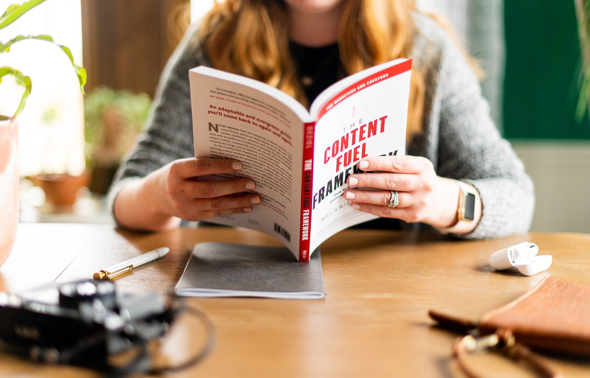

Hobbies

My 1st Favourite Hobby Is Reading.
My hobby is book reading. I started reading a book from the first grade when my father took me into a book fair and I bought a few cartoon books. I never looked back then. That’s the only thing that makes me happy. I can forget everything in this world when I am with a good book.
I used to read stories and fiction in my primary school days. But now I am pretty much grown up and I love reading books related to science and history. Bangladesh has an amazing history regarding the 1971 liberation war. I have read more than 10 books on that particular topic. I don’t read only Bengali books.
There are so many English books that I have read. My favorite book is ‘Science Fiction By Muhammad Jafar Iqbal’. I think he is the best writer in this country for the kids. Humayun Ahmed also has few awesome books but most of his books are for grown peoples.
I want to keep continue my hobby. I think book reading is the best hobby ever. Book seems like a friend. It will never feel you alone. I can spend my leisure time without wasting it. People can gain so much knowledge by reading good books. Everyone should read books.

Now, My 2nd Favourite Hobby Is Music.
Music is the best option for everyone to be happy and busy in the life. In such a busy, crowded and corrupted world where everyone wants to hurt anybody anytime, music plays a great role in making us happy in our difficult time and give lots of relief to our mind. I realized in my real life that music is a great tool of being happy always.
Music is more than the meditation and yoga as it benefits a lot to both body and mind. We can listen music anytime all through the day. It is very good habit to listen music. I generally used to of listening music during my study time and especially during my exams. It helps me a lot in getting concentrated on the study and really it gives me good result and I get full marks in my subjects.
I listen spiritual music in every morning as my dad start music in my room at 5 am. He cares me a lot and become happy when I get help by listening music. He tells me always that listening music is a power the God has given to you, never switch it off. It is the powerful tool which would increase your concentration power and always help you to go ahead and get success in your life.